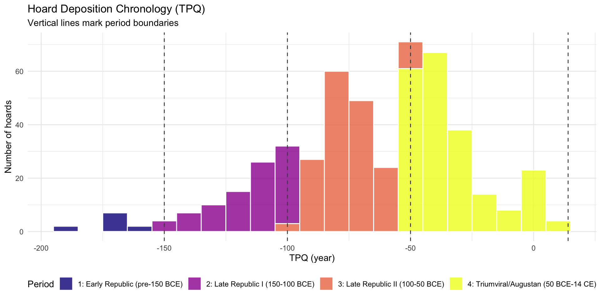
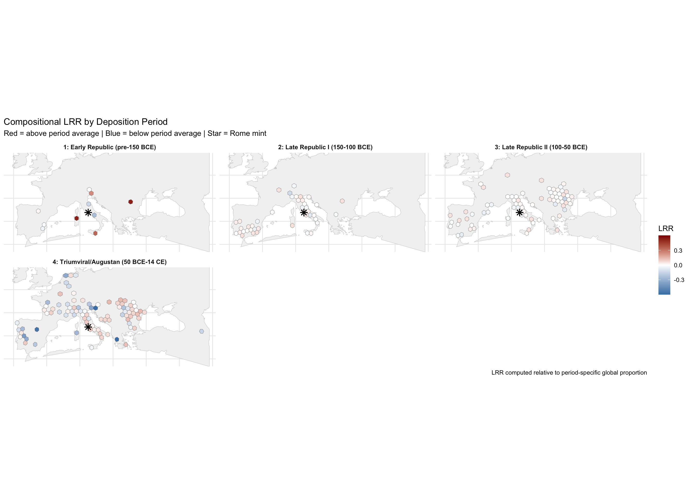
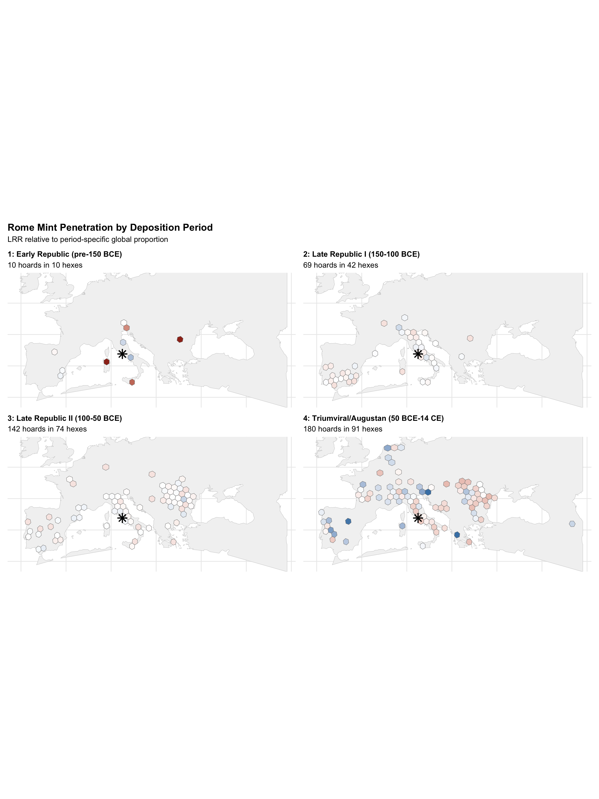
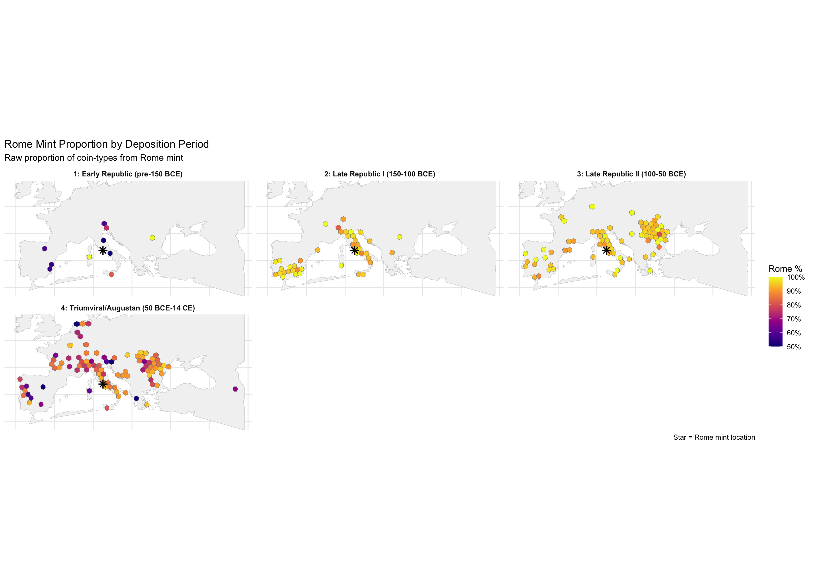
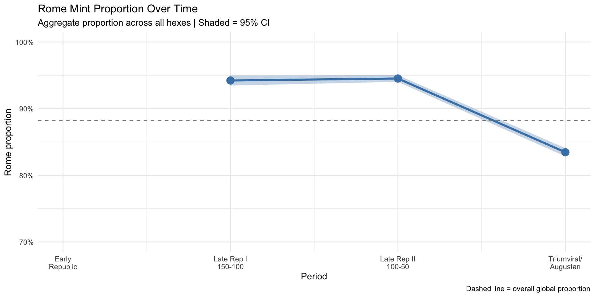
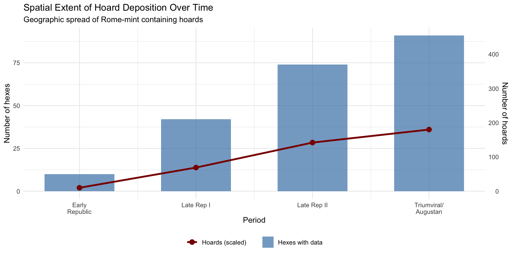
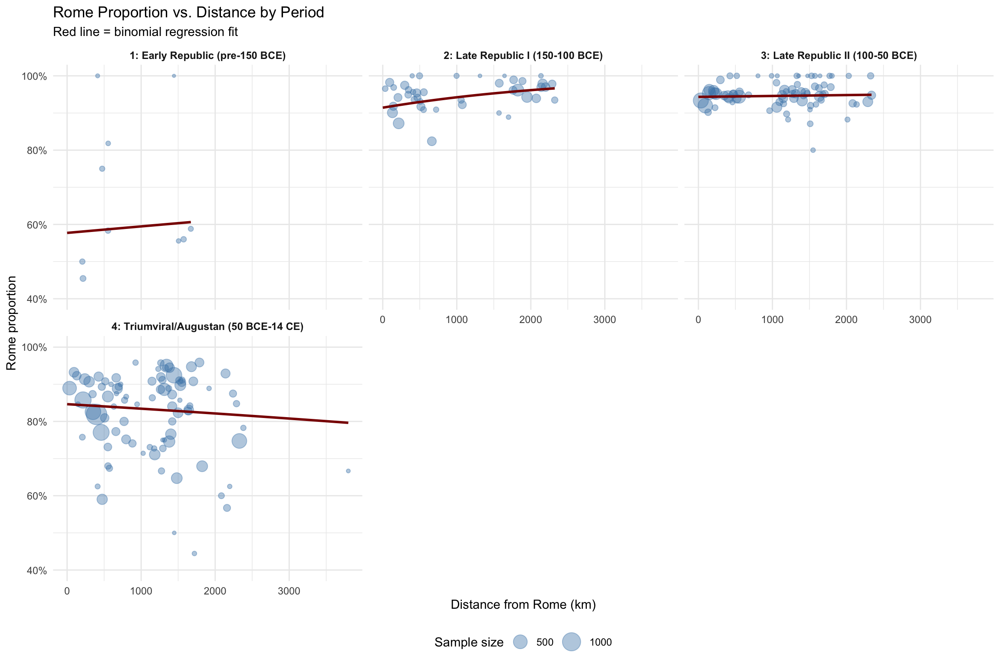

Code
library(tidyverse)
library(sf)
library(knitr)
library(patchwork)
theme_set(theme_minimal())Rome Mint Penetration Across Deposition Periods
John Glendenning
December 18, 2025
The compositional LRR analysis revealed meaningful spatial variation in Rome’s monetary penetration, but the aggregate view collapses ~500 years of Roman history into a single surface. Temporal stratification asks: How did the geography of Rome-mint penetration change over time?
We use Terminus Post Quem (TPQ) — the deposition date — rather than mint date because:
The following periods are defined based on major transitions in Roman political economy:
| Period | TPQ Range | Label | Historical Context |
|---|---|---|---|
| 1 | before 150 BCE | Early Republic | Pre-Gracchan era; limited monetization outside Italy; aftermath of Punic Wars |
| 2 | 150–100 BCE | Late Republic I | Gracchan reforms; provincial expansion; Italian allied coinage still circulating |
| 3 | 100–50 BCE | Late Republic II | Social War aftermath; Sullan era; rise of military dynasts; civil wars begin |
| 4 | 50 BCE – 14 CE | Triumviral/Augustan | Caesar to Augustus; end of Republic; monetary consolidation under Principate |
| 5 | after 14 CE | Early Imperial | Julio-Claudian dynasty; if data permits |
These bins balance historical coherence with sufficient sample size per period.
# ============================================================
# UPDATE THIS PATH to your local CHRR data file
# ============================================================
chrr_file <- "/Users/john/Library/Mobile Documents/com~apple~CloudDocs/Home/John/GIS/Roman Italy GIS/Coin Project/data/chrr_data.csv"
data_loaded <- FALSE
if (file.exists(chrr_file)) {
chrr_raw <- read_csv(chrr_file, show_col_types = FALSE)
data_loaded <- TRUE
cat("✓ Loaded", nrow(chrr_raw), "rows from", basename(chrr_file), "\n")
} else {
alt_paths <- c(
"/mnt/user-data/uploads/chrr_data.csv",
"~/chrr_data.csv",
"./data/chrr_data.csv"
)
for (alt in alt_paths) {
if (file.exists(alt)) {
chrr_raw <- read_csv(alt, show_col_types = FALSE)
data_loaded <- TRUE
cat("✓ Loaded", nrow(chrr_raw), "rows from", alt, "\n")
break
}
}
}✓ Loaded 31951 rows from chrr_data.csv # Flag Rome vs non-Rome
chrr_flagged <- chrr_raw %>%
mutate(
is_rome = mint_id == "rome" | str_detect(mint_uri, "/id/rome$"),
is_rome = replace_na(is_rome, FALSE)
)
# Parse TPQ to numeric year
chrr_temporal <- chrr_flagged %>%
mutate(
tpq_raw = as.character(hoard_tpq),
tpq_year = readr::parse_number(tpq_raw)
)
# Check TPQ coverage
tpq_coverage <- chrr_temporal %>%
summarise(
total_rows = n(),
rows_with_tpq = sum(!is.na(tpq_year)),
pct_with_tpq = round(100 * rows_with_tpq / total_rows, 1),
tpq_min = min(tpq_year, na.rm = TRUE),
tpq_max = max(tpq_year, na.rm = TRUE)
)
kable(tpq_coverage, caption = "TPQ coverage in dataset")| total_rows | rows_with_tpq | pct_with_tpq | tpq_min | tpq_max |
|---|---|---|---|---|
| 31951 | 31836 | 99.6 | -195 | 14 |
# Period definitions
period_breaks <- c(-Inf, -150, -100, -50, 14, Inf)
period_labels <- c(
"1: Early Republic (pre-150 BCE)",
"2: Late Republic I (150-100 BCE)",
"3: Late Republic II (100-50 BCE)",
"4: Triumviral/Augustan (50 BCE-14 CE)",
"5: Early Imperial (post-14 CE)"
)
# Assign periods
chrr_temporal <- chrr_temporal %>%
mutate(
tpq_period = cut(
tpq_year,
breaks = period_breaks,
labels = period_labels,
right = TRUE
),
tpq_period_num = as.integer(tpq_period)
)
# Period summary
period_summary <- chrr_temporal %>%
filter(!is.na(tpq_period)) %>%
group_by(tpq_period) %>%
summarise(
n_rows = n(),
n_hoards = n_distinct(hoard_id),
n_rome = sum(is_rome),
n_non_rome = sum(!is_rome),
pct_rome = round(100 * n_rome / n_rows, 1),
.groups = "drop"
)
kable(period_summary,
col.names = c("Period", "Rows", "Hoards", "Rome", "Non-Rome", "Rome %"),
caption = "Data distribution by TPQ period")| Period | Rows | Hoards | Rome | Non-Rome | Rome % |
|---|---|---|---|---|---|
| 1: Early Republic (pre-150 BCE) | 185 | 11 | 106 | 79 | 57.3 |
| 2: Late Republic I (150-100 BCE) | 4476 | 91 | 4229 | 247 | 94.5 |
| 3: Late Republic II (100-50 BCE) | 10237 | 173 | 9670 | 567 | 94.5 |
| 4: Triumviral/Augustan (50 BCE-14 CE) | 16938 | 215 | 14062 | 2876 | 83.0 |
# Hoard-level TPQ for cleaner visualization
hoard_tpq <- chrr_temporal %>%
filter(!is.na(tpq_year)) %>%
distinct(hoard_id, tpq_year, tpq_period)
ggplot(hoard_tpq, aes(x = tpq_year, fill = tpq_period)) +
geom_histogram(binwidth = 10, color = "white", alpha = 0.8) +
geom_vline(xintercept = c(-150, -100, -50, 14),
linetype = "dashed", color = "grey30") +
scale_fill_viridis_d(name = "Period", option = "plasma") +
labs(
title = "Hoard Deposition Chronology (TPQ)",
subtitle = "Vertical lines mark period boundaries",
x = "TPQ (year)",
y = "Number of hoards"
) +
theme(legend.position = "bottom")
# Hoard-level composition with period
hoard_comp <- chrr_temporal %>%
filter(!is.na(tpq_year), !is.na(hoard_lat), !is.na(hoard_long)) %>%
group_by(hoard_id, hoard_lat, hoard_long, tpq_year, tpq_period, tpq_period_num) %>%
summarise(
n_types = n(),
n_rome = sum(is_rome),
n_non_rome = sum(!is_rome),
p_rome = n_rome / n_types,
.groups = "drop"
)
cat("Hoards with valid TPQ and coordinates:", nrow(hoard_comp), "\n")Hoards with valid TPQ and coordinates: 463 # Summary by period
period_hoard_summary <- hoard_comp %>%
group_by(tpq_period) %>%
summarise(
n_hoards = n(),
mean_p_rome = round(mean(p_rome), 3),
sd_p_rome = round(sd(p_rome), 3),
median_p_rome = round(median(p_rome), 3),
.groups = "drop"
)
kable(period_hoard_summary,
col.names = c("Period", "Hoards", "Mean Rome %", "SD", "Median"),
caption = "Rome proportion by period (hoard-level)")| Period | Hoards | Mean Rome % | SD | Median |
|---|---|---|---|---|
| 1: Early Republic (pre-150 BCE) | 11 | 0.657 | 0.205 | 0.583 |
| 2: Late Republic I (150-100 BCE) | 87 | 0.954 | 0.064 | 0.966 |
| 3: Late Republic II (100-50 BCE) | 166 | 0.949 | 0.071 | 0.951 |
| 4: Triumviral/Augustan (50 BCE-14 CE) | 199 | 0.804 | 0.181 | 0.859 |
library(rnaturalearth)
library(rnaturalearthdata)
# Land polygons
land <- ne_countries(scale = "medium", returnclass = "sf") %>%
st_union()
# Valid geometries only
hoard_sf_valid <- hoard_sf %>%
filter(!st_is_empty(geometry))
# Bounding box
hoard_bbox <- st_bbox(hoard_sf_valid)
if (any(is.na(hoard_bbox))) {
hoard_bbox <- c(xmin = -10, ymin = 30, xmax = 45, ymax = 55)
names(hoard_bbox) <- c("xmin", "ymin", "xmax", "ymax")
}
pad <- 2
# Study extent
study_extent <- st_polygon(list(rbind(
c(hoard_bbox["xmin"] - pad, hoard_bbox["ymin"] - pad),
c(hoard_bbox["xmax"] + pad, hoard_bbox["ymin"] - pad),
c(hoard_bbox["xmax"] + pad, hoard_bbox["ymax"] + pad),
c(hoard_bbox["xmin"] - pad, hoard_bbox["ymax"] + pad),
c(hoard_bbox["xmin"] - pad, hoard_bbox["ymin"] - pad)
))) %>%
st_sfc(crs = 4326)
study_land <- st_intersection(land, study_extent)
# Project
target_crs <- 3035
hoard_sf_proj <- st_transform(hoard_sf_valid, target_crs)
study_land_proj <- st_transform(study_land, target_crs)
rome_mint <- st_as_sf(
tibble(name = "Rome", lon = 12.4964, lat = 41.9028),
coords = c("lon", "lat"),
crs = 4326
) %>%
st_transform(target_crs)
hoard_sf <- hoard_sf_validhex_size <- 100000 # 100 km
hex_grid <- st_make_grid(
study_land_proj,
cellsize = hex_size,
square = FALSE
) %>%
st_sf(hex_id = seq_along(.), geometry = .) %>%
st_set_crs(target_crs)
# Land filter
hex_land <- hex_grid %>%
filter(lengths(st_intersects(., study_land_proj)) > 0)
hex_centroids <- st_centroid(hex_land)
on_land <- lengths(st_intersects(hex_centroids, study_land_proj)) > 0
hex_land <- hex_land[on_land, ]
cat("Hexes on land:", nrow(hex_land), "\n")Hexes on land: 859 Global Rome proportion: 88.26 %# Aggregate by hex AND period
hex_period_comp <- hoard_hex %>%
st_drop_geometry() %>%
group_by(hex_id, tpq_period, tpq_period_num) %>%
summarise(
n_hoards = n(),
total_types = sum(n_types),
rome_types = sum(n_rome),
non_rome_types = sum(n_non_rome),
p_rome = rome_types / total_types,
.groups = "drop"
)
# Period-specific global proportions
period_globals <- hex_period_comp %>%
group_by(tpq_period, tpq_period_num) %>%
summarise(
p_rome_period = sum(rome_types) / sum(total_types),
.groups = "drop"
)
kable(period_globals,
col.names = c("Period", "Period Num", "Rome % (period)"),
digits = 3,
caption = "Global Rome proportion by period")| Period | Period Num | Rome % (period) |
|---|---|---|
| 1: Early Republic (pre-150 BCE) | 1 | 0.590 |
| 2: Late Republic I (150-100 BCE) | 2 | 0.942 |
| 3: Late Republic II (100-50 BCE) | 3 | 0.945 |
| 4: Triumviral/Augustan (50 BCE-14 CE) | 4 | 0.835 |
# Join period globals and compute LRR
epsilon <- 0.5
hex_period_lrr <- hex_period_comp %>%
left_join(period_globals, by = c("tpq_period", "tpq_period_num")) %>%
mutate(
# LRR relative to period-specific global
LRR_period = log((rome_types + epsilon) / (total_types + epsilon)) - log(p_rome_period),
# LRR relative to overall global
LRR_global = log((rome_types + epsilon) / (total_types + epsilon)) - log(p_global),
# Rome vs non-Rome contrast
LRR_contrast = ifelse(
non_rome_types > 0,
log((rome_types + epsilon) / (non_rome_types + epsilon)),
NA_real_
)
)lrr_period_stats <- hex_period_lrr %>%
group_by(tpq_period) %>%
summarise(
n_hexes = n(),
total_hoards = sum(n_hoards),
lrr_mean = round(mean(LRR_period, na.rm = TRUE), 3),
lrr_sd = round(sd(LRR_period, na.rm = TRUE), 3),
p_rome_mean = round(mean(p_rome, na.rm = TRUE), 3),
.groups = "drop"
)
kable(lrr_period_stats,
col.names = c("Period", "Hexes", "Hoards", "LRR Mean", "LRR SD", "Rome % Mean"),
caption = "LRR summary by period")| Period | Hexes | Hoards | LRR Mean | LRR SD | Rome % Mean |
|---|---|---|---|---|---|
| 1: Early Republic (pre-150 BCE) | 10 | 10 | 0.121 | 0.272 | 0.681 |
| 2: Late Republic I (150-100 BCE) | 42 | 69 | 0.008 | 0.041 | 0.950 |
| 3: Late Republic II (100-50 BCE) | 74 | 142 | 0.006 | 0.038 | 0.951 |
| 4: Triumviral/Augustan (50 BCE-14 CE) | 91 | 180 | -0.045 | 0.210 | 0.807 |
# Join LRR back to hex geometry
hex_period_sf <- hex_land %>%
inner_join(hex_period_lrr, by = "hex_id") %>%
st_transform(4326)
# Reference layers in WGS84
land_wgs <- st_transform(study_land_proj, 4326)
rome_wgs <- st_transform(rome_mint, 4326)
# Get periods present in data
periods_present <- sort(unique(hex_period_sf$tpq_period_num))
cat("Periods with data:", paste(periods_present, collapse = ", "), "\n")Periods with data: 1, 2, 3, 4 ggplot() +
geom_sf(data = land_wgs, fill = "grey95", color = "grey80") +
geom_sf(
data = hex_period_sf,
aes(fill = LRR_period),
color = "grey50",
linewidth = 0.15
) +
geom_sf(data = rome_wgs, color = "black", shape = 8, size = 3, stroke = 1) +
scale_fill_gradient2(
low = "steelblue",
mid = "white",
high = "darkred",
midpoint = 0,
name = "LRR",
limits = c(-0.6, 0.6),
oob = scales::squish
) +
coord_sf(
xlim = c(hoard_bbox["xmin"] - 1, hoard_bbox["xmax"] + 1),
ylim = c(hoard_bbox["ymin"] - 1, hoard_bbox["ymax"] + 1)
) +
facet_wrap(~tpq_period, ncol = 3) +
labs(
title = "Compositional LRR by Deposition Period",
subtitle = "Red = above period average | Blue = below period average | Star = Rome mint",
caption = "LRR computed relative to period-specific global proportion"
) +
theme_minimal() +
theme(
axis.text = element_blank(),
axis.title = element_blank(),
strip.text = element_text(size = 9, face = "bold"),
legend.position = "right"
)
# Create individual maps for each period
period_maps <- map(sort(unique(hex_period_sf$tpq_period)), function(p) {
period_data <- hex_period_sf %>% filter(tpq_period == p)
n_hoards <- sum(period_data$n_hoards)
n_hexes <- nrow(period_data)
ggplot() +
geom_sf(data = land_wgs, fill = "grey95", color = "grey80") +
geom_sf(
data = period_data,
aes(fill = LRR_period),
color = "grey50",
linewidth = 0.2
) +
geom_sf(data = rome_wgs, color = "black", shape = 8, size = 4, stroke = 1.2) +
scale_fill_gradient2(
low = "steelblue",
mid = "white",
high = "darkred",
midpoint = 0,
name = "LRR",
limits = c(-0.6, 0.6),
oob = scales::squish
) +
coord_sf(
xlim = c(hoard_bbox["xmin"] - 1, hoard_bbox["xmax"] + 1),
ylim = c(hoard_bbox["ymin"] - 1, hoard_bbox["ymax"] + 1)
) +
labs(
title = p,
subtitle = paste(n_hoards, "hoards in", n_hexes, "hexes")
) +
theme_minimal() +
theme(
axis.text = element_blank(),
axis.title = element_blank(),
legend.position = "none",
plot.title = element_text(size = 11, face = "bold")
)
})
# Combine with shared legend
wrap_plots(period_maps, ncol = 2) +
plot_annotation(
title = "Rome Mint Penetration by Deposition Period",
subtitle = "LRR relative to period-specific global proportion",
theme = theme(plot.title = element_text(size = 14, face = "bold"))
)
ggplot() +
geom_sf(data = land_wgs, fill = "grey95", color = "grey80") +
geom_sf(
data = hex_period_sf,
aes(fill = p_rome),
color = "grey50",
linewidth = 0.15
) +
geom_sf(data = rome_wgs, color = "black", shape = 8, size = 3, stroke = 1) +
scale_fill_viridis_c(
name = "Rome %",
labels = scales::percent_format(),
option = "plasma",
limits = c(0.5, 1),
oob = scales::squish
) +
coord_sf(
xlim = c(hoard_bbox["xmin"] - 1, hoard_bbox["xmax"] + 1),
ylim = c(hoard_bbox["ymin"] - 1, hoard_bbox["ymax"] + 1)
) +
facet_wrap(~tpq_period, ncol = 3) +
labs(
title = "Rome Mint Proportion by Deposition Period",
subtitle = "Raw proportion of coin-types from Rome mint",
caption = "Star = Rome mint location"
) +
theme_minimal() +
theme(
axis.text = element_blank(),
axis.title = element_blank(),
strip.text = element_text(size = 9, face = "bold"),
legend.position = "right"
)
# Period-level summary with confidence intervals
period_trend <- hex_period_lrr %>%
group_by(tpq_period, tpq_period_num) %>%
summarise(
n_hexes = n(),
total_types = sum(total_types),
rome_types = sum(rome_types),
p_rome = rome_types / total_types,
.groups = "drop"
) %>%
mutate(
# Binomial SE
se_p = sqrt(p_rome * (1 - p_rome) / total_types),
ci_lower = p_rome - 1.96 * se_p,
ci_upper = p_rome + 1.96 * se_p
)
ggplot(period_trend, aes(x = tpq_period_num, y = p_rome)) +
geom_ribbon(aes(ymin = ci_lower, ymax = ci_upper), alpha = 0.3, fill = "steelblue") +
geom_line(linewidth = 1.2, color = "steelblue") +
geom_point(size = 4, color = "steelblue") +
geom_hline(yintercept = p_global, linetype = "dashed", color = "grey50") +
scale_x_continuous(
breaks = period_trend$tpq_period_num,
labels = c("Early\nRepublic", "Late Rep I\n150-100", "Late Rep II\n100-50",
"Triumviral/\nAugustan", "Early\nImperial")[1:nrow(period_trend)]
) +
scale_y_continuous(labels = scales::percent_format(), limits = c(0.7, 1)) +
labs(
title = "Rome Mint Proportion Over Time",
subtitle = "Aggregate proportion across all hexes | Shaded = 95% CI",
x = "Period",
y = "Rome proportion",
caption = "Dashed line = overall global proportion"
)
# Count hexes with data per period
spatial_extent <- hex_period_lrr %>%
group_by(tpq_period, tpq_period_num) %>%
summarise(
n_hexes = n_distinct(hex_id),
n_hoards = sum(n_hoards),
.groups = "drop"
)
ggplot(spatial_extent, aes(x = tpq_period_num)) +
geom_col(aes(y = n_hexes, fill = "Hexes with data"), alpha = 0.7, width = 0.6) +
geom_line(aes(y = n_hoards / 5, color = "Hoards (scaled)"), linewidth = 1.2) +
geom_point(aes(y = n_hoards / 5, color = "Hoards (scaled)"), size = 3) +
scale_x_continuous(
breaks = spatial_extent$tpq_period_num,
labels = c("Early\nRepublic", "Late Rep I", "Late Rep II",
"Triumviral/\nAugustan", "Early\nImperial")[1:nrow(spatial_extent)]
) +
scale_y_continuous(
name = "Number of hexes",
sec.axis = sec_axis(~. * 5, name = "Number of hoards")
) +
scale_fill_manual(values = c("Hexes with data" = "steelblue"), name = NULL) +
scale_color_manual(values = c("Hoards (scaled)" = "darkred"), name = NULL) +
labs(
title = "Spatial Extent of Hoard Deposition Over Time",
subtitle = "Geographic spread of Rome-mint containing hoards",
x = "Period"
) +
theme(legend.position = "bottom")
# Add hex centroid coordinates
hex_centroids_wgs <- hex_land %>%
st_centroid() %>%
st_transform(4326)
cent_coords <- st_coordinates(hex_centroids_wgs)
hex_coords <- tibble(
hex_id = hex_land$hex_id,
cent_lon = cent_coords[, 1],
cent_lat = cent_coords[, 2]
)
rome_coords <- c(12.4964, 41.9028)
hex_coords <- hex_coords %>%
mutate(
dist_rome_km = sqrt((cent_lon - rome_coords[1])^2 + (cent_lat - rome_coords[2])^2) * 111
)
# Join distance to period data
hex_period_dist <- hex_period_lrr %>%
left_join(hex_coords, by = "hex_id")
# Fit binomial model by period
distance_models <- hex_period_dist %>%
filter(!is.na(dist_rome_km)) %>%
group_by(tpq_period, tpq_period_num) %>%
nest() %>%
mutate(
model = map(data, ~glm(
cbind(rome_types, non_rome_types) ~ dist_rome_km,
family = binomial(link = "logit"),
data = .x
)),
tidy = map(model, broom::tidy)
) %>%
unnest(tidy) %>%
filter(term == "dist_rome_km") %>%
select(tpq_period, tpq_period_num, estimate, std.error, p.value) %>%
mutate(
or_100km = exp(estimate * 100),
sig = ifelse(p.value < 0.05, "*", "")
)
kable(distance_models,
col.names = c("Period", "Num", "Coefficient", "SE", "p-value", "OR per 100km", "Sig"),
digits = c(0, 0, 6, 6, 4, 4, 0),
caption = "Distance effect on Rome proportion by period (* = p < 0.05)")| Period | Num | Coefficient | SE | p-value | OR per 100km | Sig |
|---|---|---|---|---|---|---|
| 2: Late Republic I (150-100 BCE) | 2 | 0.000425 | 0.000091 | 0.0000 | 1.0435 | * |
| 3: Late Republic II (100-50 BCE) | 3 | 0.000047 | 0.000074 | 0.5233 | 1.0048 | |
| 4: Triumviral/Augustan (50 BCE-14 CE) | 4 | -0.000090 | 0.000035 | 0.0100 | 0.9910 | * |
| 1: Early Republic (pre-150 BCE) | 1 | 0.000072 | 0.000272 | 0.7910 | 1.0072 |
# Create predicted curves for each period
pred_curves <- hex_period_dist %>%
filter(!is.na(dist_rome_km)) %>%
group_by(tpq_period, tpq_period_num) %>%
nest() %>%
mutate(
model = map(data, ~glm(
cbind(rome_types, non_rome_types) ~ dist_rome_km,
family = binomial(link = "logit"),
data = .x
)),
pred_data = map(data, ~tibble(
dist_rome_km = seq(0, max(.x$dist_rome_km, na.rm = TRUE), length.out = 100)
)),
predictions = map2(model, pred_data, ~mutate(.y,
p_rome_pred = predict(.x, newdata = .y, type = "response")
))
) %>%
select(tpq_period, tpq_period_num, predictions) %>%
unnest(predictions)
# Plot
ggplot() +
geom_point(
data = hex_period_dist,
aes(x = dist_rome_km, y = p_rome, size = total_types),
alpha = 0.4,
color = "steelblue"
) +
geom_line(
data = pred_curves,
aes(x = dist_rome_km, y = p_rome_pred),
color = "darkred",
linewidth = 1
) +
facet_wrap(~tpq_period, ncol = 3) +
scale_y_continuous(labels = scales::percent_format(), limits = c(0.4, 1)) +
scale_size_continuous(name = "Sample size", range = c(1, 8)) +
labs(
title = "Rome Proportion vs. Distance by Period",
subtitle = "Red line = binomial regression fit",
x = "Distance from Rome (km)",
y = "Rome proportion"
) +
theme(
legend.position = "bottom",
strip.text = element_text(size = 9, face = "bold")
)
# Add coordinates to export
hex_period_export <- hex_period_lrr %>%
left_join(hex_coords, by = "hex_id") %>%
select(
hex_id, cent_lon, cent_lat, dist_rome_km,
tpq_period, tpq_period_num,
n_hoards, total_types, rome_types, non_rome_types,
p_rome, p_rome_period,
LRR_period, LRR_global, LRR_contrast
)
write_csv(hex_period_export, "hex_lrr_by_period_100km.csv")
cat("Exported:", nrow(hex_period_export), "hex-period observations\n")Exported: 217 hex-period observationsFile: hex_lrr_by_period_100km.csv# Create summary comparison
summary_comparison <- period_globals %>%
left_join(
hex_period_lrr %>%
group_by(tpq_period) %>%
summarise(
n_hexes = n(),
n_hoards = sum(n_hoards),
lrr_sd = sd(LRR_period, na.rm = TRUE),
.groups = "drop"
),
by = "tpq_period"
) %>%
left_join(
distance_models %>% select(tpq_period, or_100km, sig),
by = "tpq_period"
) %>%
select(tpq_period, n_hoards, n_hexes, p_rome_period, lrr_sd, or_100km, sig)
kable(summary_comparison,
col.names = c("Period", "Hoards", "Hexes", "Rome %", "LRR SD", "OR/100km", ""),
digits = c(0, 0, 0, 3, 3, 4, 0),
caption = "Summary: Rome penetration by period")| Period | Hoards | Hexes | Rome % | LRR SD | OR/100km | |
|---|---|---|---|---|---|---|
| 1: Early Republic (pre-150 BCE) | 10 | 10 | 0.590 | 0.272 | 1.0072 | |
| 2: Late Republic I (150-100 BCE) | 69 | 42 | 0.942 | 0.041 | 1.0435 | * |
| 3: Late Republic II (100-50 BCE) | 142 | 74 | 0.945 | 0.038 | 1.0048 | |
| 4: Triumviral/Augustan (50 BCE-14 CE) | 180 | 91 | 0.835 | 0.210 | 0.9910 | * |
Spatial variation (LRR SD): Higher values indicate more geographic heterogeneity in Rome’s penetration during that period.
Distance effect (OR per 100km): Values below 1 indicate Rome proportion decreases with distance; closer to 1 means distance matters less.
Changes over time: Compare whether Rome’s monetary reach became more uniform (lower SD, OR→1) or more differentiated (higher SD, OR<1) across periods.
This period-stratified analysis provides the observation layer for HMM implementation:
The exported hex_lrr_by_period_100km.csv contains all necessary fields for HMM fitting.
R version 4.5.1 (2025-06-13)
Platform: aarch64-apple-darwin20
Running under: macOS Sequoia 15.7.1
Matrix products: default
BLAS: /Library/Frameworks/R.framework/Versions/4.5-arm64/Resources/lib/libRblas.0.dylib
LAPACK: /Library/Frameworks/R.framework/Versions/4.5-arm64/Resources/lib/libRlapack.dylib; LAPACK version 3.12.1
locale:
[1] en_US.UTF-8/en_US.UTF-8/en_US.UTF-8/C/en_US.UTF-8/en_US.UTF-8
time zone: America/Chicago
tzcode source: internal
attached base packages:
[1] stats graphics grDevices utils datasets methods base
other attached packages:
[1] rnaturalearthdata_1.0.0 rnaturalearth_1.1.0 patchwork_1.3.2
[4] knitr_1.50 sf_1.0-23 lubridate_1.9.4
[7] forcats_1.0.1 stringr_1.6.0 dplyr_1.1.4
[10] purrr_1.2.0 readr_2.1.6 tidyr_1.3.1
[13] tibble_3.3.0 ggplot2_4.0.1 tidyverse_2.0.0
loaded via a namespace (and not attached):
[1] gtable_0.3.6 xfun_0.55 htmlwidgets_1.6.4 tzdb_0.5.0
[5] vctrs_0.6.5 tools_4.5.1 generics_0.1.4 parallel_4.5.1
[9] proxy_0.4-28 pkgconfig_2.0.3 KernSmooth_2.23-26 RColorBrewer_1.1-3
[13] S7_0.2.1 lifecycle_1.0.4 compiler_4.5.1 farver_2.1.2
[17] htmltools_0.5.9 class_7.3-23 yaml_2.3.12 pillar_1.11.1
[21] crayon_1.5.3 classInt_0.4-11 wk_0.9.4 tidyselect_1.2.1
[25] digest_0.6.39 stringi_1.8.7 labeling_0.4.3 fastmap_1.2.0
[29] grid_4.5.1 cli_3.6.5 magrittr_2.0.4 broom_1.0.11
[33] e1071_1.7-16 withr_3.0.2 scales_1.4.0 backports_1.5.0
[37] bit64_4.6.0-1 timechange_0.3.0 rmarkdown_2.30 bit_4.6.0
[41] hms_1.1.4 evaluate_1.0.5 viridisLite_0.4.2 s2_1.1.9
[45] rlang_1.1.6 Rcpp_1.1.0 glue_1.8.0 DBI_1.2.3
[49] rstudioapi_0.17.1 vroom_1.6.7 jsonlite_2.0.0 R6_2.6.1
[53] units_1.0-0